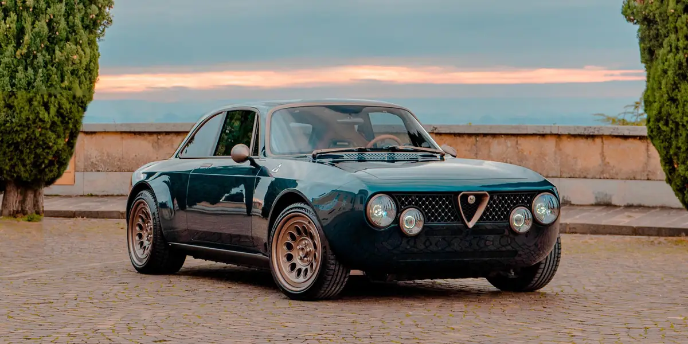
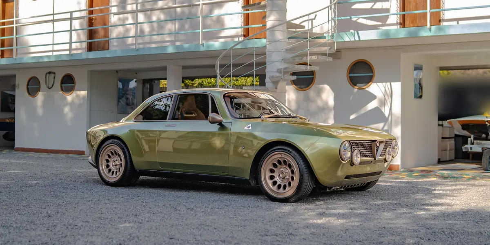
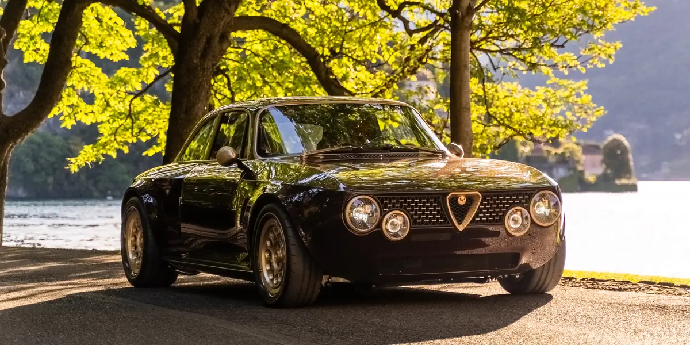
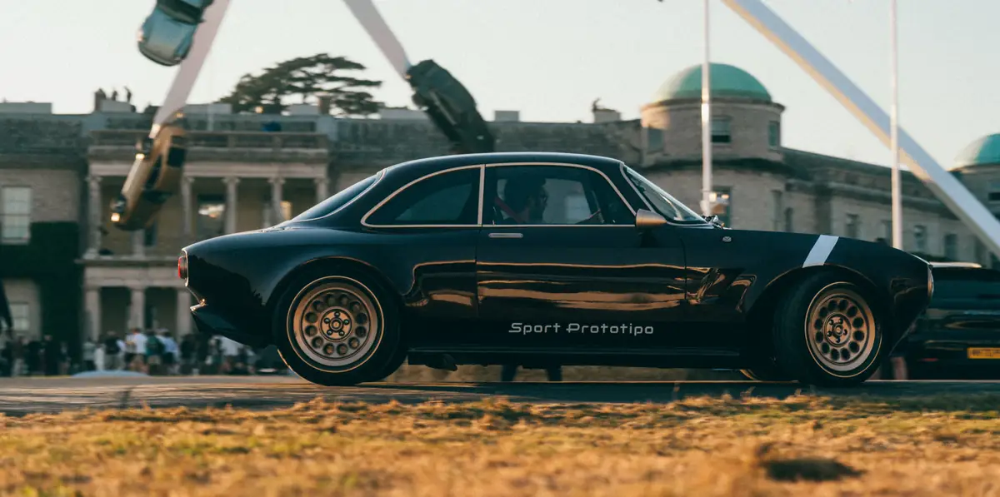
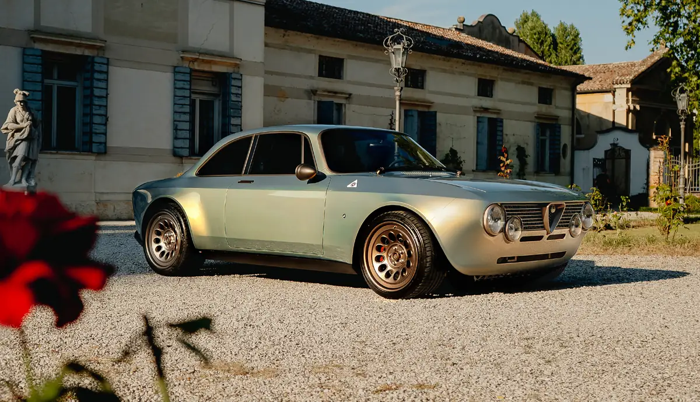

The modern Gran Turismo, entirely electric.
- 0–100 km/h
- 2.9 s
- Power
- 590 hp
- Torque
- 900 Nm
Coach-built elegance screaming pure Italian.
Beauty is the purpose.
Engineering is the method.
Totem Automobili is an entirely Italian house. Every motor car is conceived for one person and shaped by hand until form and function become indistinguishable.
Its point of departure is the Italian grand tourer of the 1960s, the purest expression of an era when beauty led the way. Modern technology has given that icon a second life: the proportions endure, while everything beneath them moves forward.
One platform, the original Italian GT, re-engineered in every version: silent and electric, twin-turbo V6, or built for the track. Each keeps the same proportions and answers only to its owner.


The modern Gran Turismo, entirely electric.


Electric, twin-turbo V6 or Sport Prototipo: whatever sits beneath, a Totem keeps the proportions of the Italian grand tourer and the soul of a car made for one person.
Three interpretations of the Italian Gran Turismo on one carbon-fibre architecture. Every figure is indicative: each car is configured, and tuned, for its owner.
|  |  | |
|---|---|---|---|
| Powertrain | Electric, rear-wheel drive | 2.8 l twin-turbo V6 | 3.2 l twin-turbo V6 |
| Power | 590 hp | 640 hp | 740 hp |
| Torque | 900 Nm | 655 Nm | 690 Nm |
| 0–100 km/h | 2.9 s | 3.2 s | 2.8 s |
| Top speed | 210 km/h, limited | 240 km/h, limited | 250 km/h, limited |
| Gearbox | Automatic, LSD | 6-speed manual | 6-speed manual |
| Weight | 1,490 kg | 1,180 kg dry | 1,200 kg dry |
| Structure | Carbon-fibre monocoque | Carbon-fibre monocoque | Carbon-fibre monocoque |
From Lake Como to Pebble Beach, Goodwood and Miami, Totem is invited among the most important concours d’elegance in the world, and has come home with their prizes.
Concurso de Elegancia Costa del Sol, category Restomods
MODA Miami
Concorso d’Eleganza Villa d’Este, the “Rocket” Sport Prototipo
Elegance à Megève, the GT Super “Hestia”
Concorso d’Eleganza Villa d’Este, the GT Electric “Armonia”
1000 Miglia Green, the GT Electric

The GT Super in 14 of the more than forty Totem paints. Drag the car or use the arrows to walk around it, and pick a colour below. Through the Individual Program, any shade can be matched to a sample you bring.

ViewFront quarter
PaintBlu Francia
Studio rendering of the GT Super. Colours on screen are indicative.
A twin-turbocharged V6 sits behind the front axle; a six-speed, open-gated manual gearbox sends its power to the rear wheels alone. Every input remains mechanical, immediate and direct. Or, in the GT Electric, torque arrives in an instant and in silence.
Elegant at rest, ferocious when asked.
Silent quick.
Lake Como in the morning sun, a snow road above the clouds, a circuit in the fog, the Sport Prototipo at full pace.
The Totem Individual Program begins where the catalogue ends: every request is studied, engineered and crafted in our atelier, approved on physical samples and recorded on the car itself.
Italian coachbuilding, reimagined.
Beyond the GT Series, a clean sheet. Tiziano is the first platform conceived entirely by Totem: a carbon-fibre central monocoque, aluminium subframes and a naturally aspirated V12 set behind the driver, with a six-speed manual transaxle. On it, the T12 Series will be a family of coachbuilt automobiles, each a one-off within a series.

The 2026 brochures, to read on screen or download. The Options & Totem Individual catalogue is available on request.



Every Totem begins as a conversation. Tell us about the car you have in mind: the atelier replies personally.